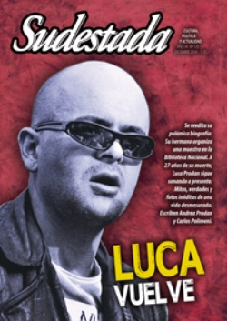

Buscar
El origen de las mujeres
La conquista salvaje del Nuevo Mundo tuvo una víctima central: la mujer, que sufrió la explotación y el abuso como ningún otro. El autor de esta nota propone una indagación en la mirada perversa del conquistador, que aplicaba empuñando la espada y la cruz, vistiendo con la misma impunidad una armadura o un vestido de fraile.
Edición N° 135
Diciembre 2014
Revista bimensual
Comprar edición impresaSumario
- Luca vuelve
- La política es otra cosa
- Crisis canilla
- Sus verdades eran también sus cicatrices
- Luca. Un ciego guiando a los ciegos
- "Me interesaba recuperar a un tipo que estaba en el olvido"
- El coraje de inventar un porvenir
- "La vida de pueblo es un sostén emocional"
- El canto de las tormentas
- Las urnas abiertas de América Latina
- El padre del realismo sucio
- "Crear hoy un partido leninista es anacrónico"
- El origen de las mujeres
- Relatos de ron y mar
Compartir Articulo
Más que un descubrimiento en el sentido estricto, el Nuevo Mundo irrumpe en Occidente como una suerte de aparición incomprensible. Todo aquí es novedoso. Las crónicas consignan ciertos árboles que crecen a la orilla de los ríos, cuyas semillas brotan convertidas en pequeñas aves si caen en la tierra, y si tocan el agua, se transforman en peces. Sin embargo, lo más perturbador son sus habitantes, cuyo origen los desconcierta. Para colmo, se presentan desnudos. Colón, el Gran Almirante de la Mar Oceana, en sus cartas de relación donde vuelca todo tipo de pormenores para mantener informados a sus inversionistas, los Reyes Católicos, no logra sustraerse del encanto y menciona sus fermosos y proporcionados cuerpos. Semejante desnudez, tan luego impúdica como inocente ante los ojos de los codiciosos navegantes, los inquieta sobremanera.
Durante el segundo viaje de 1494, el panorama se complica. En lugar de las tres embarcaciones de distinto porte, arriba al Caribe una enorme flota de 17 navíos que atracan en la isla La Española. El fuerte Natividad, construido con los restos del naufragio de la Santa María, está destruido y sus ocupantes, muertos. La aparición geográfica es más vasta de lo imaginado. Ante la ausencia de tesoros, emerge la extrema violencia de los invasores que utilizan a los habitantes como un combustible biológico renovable en plantaciones y lavaderos.
Es tan escaso el oro que encuentran, que el almirante decide cambiar de táctica. Colón le encomienda a Ramón Pané, un fraile de la orden de San Jerónimo, que estudie el idioma de los indios y averigüe sus costumbres y creencias. Quizás así se descubra algo. De ese modo surge la primera crónica etnográfica de América: "Escribo lo que he podido saber y entender de las creencias e idolatrías de los indios y de cómo veneran a sus dioses". El texto conocido como Relación de las antigüedades de los indios es relevante por varios motivos. En primera instancia, a poco de estar finalizado en 1498, prácticamente nada quedaba de los tainos, los habitantes que sufrieron el primer embate del "descubrimiento". Nada, apenas esas páginas y una serie de vocablos que fueron incorporados en el léxico de los conquistadores y que nosotros utilizamos en la actualidad: hamaca, iguana, batata, cacique, caníbal, canoa, caribe, guayaba, yuca o bohío, únicos sobrevivientes de una cultura muda para siempre. Es la crónica de una ausencia, a la que le seguirán nuevas ausentificaciones de presencias. Curiosamente, Pané levanta una tradición oral que proviene de larga data. Habla de los muertos vivientes que caminan por las noches. No olvidemos que la isla La Española, donde se desarrolla la crónica, es el territorio que hoy comparten República Dominicana y Haití, una geografía donde los esclavos negros mestizaron sus creencia con aquellas tradiciones autóctonas que derivaron en el vudú y los zombis que, como forma de dominación por el terror, fueron utilizados por la dictadura de los Duvalier y sus tonton macoutes.
Pero sobre todo me interesa centrarme en el choque de imaginarios que el manuscrito del fraile pone en evidencia sin advertirlo. Aunque Pané dista una enormidad del nivel intelectual de otros cronistas religiosos como Bartolomé de Las Casas, José da Acosta, o incluso de un soldado como Bernal Díaz del Castillo, y pese a que no ve más allá de lo que tiene frente a sus ojos, esa misma limitación le permite escribir sin autocensuras. Vuelca todo con pelos y señales. Nos exhibe los fatales errores de percepción de unos y otros. Veamos un caso. Menciona que a los efectos de la evangelización, le fueron entregadas a un grupo de indígenas unas estampas religiosas. Estos las llevaron a un campo de labranza y luego tiraron las imágenes al suelo y las cubrieron de tierra y después orinaron encima diciendo: Ahora serán buenos y grandes tus frutos. Enteradas del hecho, las autoridades españolas lo interpretaron como que habían destrozado y escarnecido las imágenes. Bartolomé Colón, a quien su hermano había dejado al mando, formó proceso contra los malhechores y, sabida la verdad, los hizo quemar públicamente.
(La nota completa en la Sudestada N° 135 - diciembre de 2014)
Comentarios
Marcelo Valko
Articulos más vistos


LIBRERÍA SUDESTADA

Colección infantil

Distribuidora de Libros

Suscripción

Sudestada en URUGUAY

Otros articulos de esta edición
El padre del realismo sucio
"¿Por qué hay tan poca gente interesante? De entre todos los millones, ¿por qué no hay unos cuantos? ¿Tenemos que ...
Luca vuelve
A 27 años de la muerte del líder de Sumo, se reedita la biografía que escribió Carlos Polimeni y Andrea ...
Luca. Un ciego guiando a los ciegos
Un día cualquiera se desliza hacia la noche en la redacción del entonces gran diario argentino. El periodista que escribe ...
"La vida de pueblo es un sostén emocional"
En su nuevo disco acústico, Chango, grabado sólo con guitarra y voz, el cantautor santiagueño Raly Barrionuevo decidió homenajear a ...
"Me interesaba recuperar a un tipo que estaba en el olvido"
Entrevista con el autor del libro Luca. Un ciego guiando a los ciegos.
"Crear hoy un partido leninista es anacrónico"
El intelectual marxista de 86 años acaba de publicar su biografía, Militante crítico, una vida de luchas sin concesiones. En ...